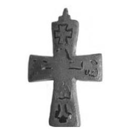

Catalog › CE-0198 · VSM2013-3
Valvă de encolpion din aramă, cat. 3, Muzeul Vladimir–Suzdal
a doua jumătate a sec. XI – sec. XII (1051–1200) · cetățuia Pirovo (городище Пирово), Rusia · Muzeul-rezervație de stat Vladimir–Suzdal (Владимиро-Суздальский музей-заповедник), Rusia, inv. В-39009/16. АС-7646
single valve of a reliquary cross, aramă; a doua jumătate a c. XI – sec. XII (1051–1200); found at cetățuia Pirovo (городище Пирово), Rusia; kept at Muzeul-rezervație de stat Vladimir–Suzdal (Владимиро-Суздальский музей-заповедник), Rusia.


Identificare
- Categorie
- Valvă izolată
- Material
- Aramă
- Tehnică
- Gravare (incizie); Niello
- Stare
- Fragmentară
- Dimensiuni
- Î 63 × L 36 × Gr 6 mm
Iconografie
- Descriere avers
- Contururile lui Hristos răstignit; deasupra capului o cruce simplă cu patru brațe; pe capetele brațelor laterale contururi de sfinți în jumătate de figură, întorși spre Hristos; incizie și niello.
Datare și atribuire
- Datare
- a doua jumătate a sec. XI – sec. XII (1051–1200)
- Centru
- Necunoscut
- Tipologie
- grupa „cu niello”, după Kokorina
Descoperire
- Localitate
- cetățuia Pirovo (городище Пирово)
- Țară
- Rusia
- Context
- Fortificație
- Anul
- 1968
- Coordonate
- 56.1290° N, 40.4070° E
- Precizia locului
- Loc de păstrare (loc de descoperire incert)
Păstrare și referințe
- Colecție
- Muzeul-rezervație de stat Vladimir–Suzdal (Владимиро-Суздальский музей-заповедник), Rusia
- Nr. inventar
- В-39009/16. АС-7646
- Bibliografie
- Н. А. Кокорина (сост.), Нагрудные кресты древнерусского времени из археологических коллекций Государственного Владимиро-Суздальского музея-заповедника, Vladimir, 2013, 76 p. [Kokorina 2013], p. 19, cat. nr. 3, cu fotografia reprodusă pe aceeași pagină. PDF liber pe site-ul muzeului: https://vladmuseum.ru/upload/iblock/787/69. Нагрудные кресты древнерусского времени из археологических коллекций ГВСМЗ.pdf (accesat 17.10.2026); text și pe azbyka.ru.
- Figura
- Kokorina 2013, ilustrația de la cat. 3
- Planșe
- Kokorina 2013, p. 19
- Observații
- Datare după Kokorina: a doua jumătate a sec. XI – sec. XII. Descoperire în 1968, săpături: Sedova M. V. Fragment: valva din spate și cruciulița de suspendare lipsesc. Locul descoperirii nu e cunoscut cu precizie; punctul de pe hartă marchează locul de păstrare (Muzeul-rezervație de stat Vladimir–Suzdal), nu locul descoperirii. Coordonate: nu sunt date în sursă.
Citare: Corpus Encolpiorum, CE-0198, Valvă de encolpion din aramă, cat. 3, Muzeul Vladimir–Suzdal, https://vitaliejosanu1979-ux.github.io/primul-meu-proiect/piese/VSM2013-3/ (accesat 2026-10-17).